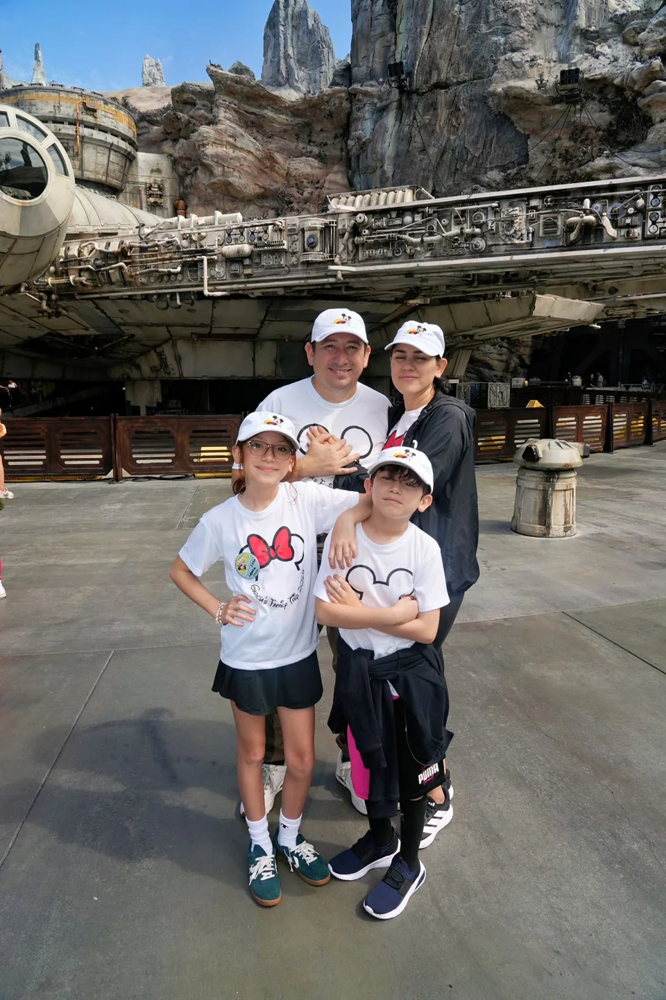

UNA HISTORIA SOBRE LO QUE CONSTRUIMOS
Christian García.
Durante 19 años ayudé
a construir negocios.
Hoy ayudo a las personas a construir
algo mucho más personal.
Su futuro.
Conoce mi historia01 / LO QUE TRAIGO CONMIGO
Construí negocios.
Aprendí de
las personas.
Casi dos décadas en gestión comercial, desarrollo de negocio, marcas y liderazgo.
Hoy pongo esa experiencia al servicio de las decisiones financieras de personas y familias.
GARBA
Escuchar.
Entender.
Diseñar.

02 / LO QUE DE VERDAD IMPORTA
Mi proyecto
más importante
nunca fue
una empresa.
Jessica · Ivanna · Mateo
Una película. Una ruta en bici.
Tiempo con ellos.
También me mueven la tecnología, los negocios,
la salud y el ejercicio funcional.
¿También te gusta el cine?
Me gusta tanto que puedo disfrutar una película incluso solo.
03 / EL SIGUIENTE CAPÍTULO
Lo que estoy
construyendo.
Quiero hacer de GarBa una firma de servicios financieros reconocida en Sonora.
LA BASERelaciones de largo plazo.
EL SIGUIENTE PASOUn equipo comercial sólido.
Si conoces personas con quienes construirlo,
ahí puede empezar una buena alianza.
04 / ASÍ EMPIEZA MI TRABAJO
¿Qué estás
construyendo?
Una pregunta antes de cualquier propuesta. Elige una historia.
¿Quién cuenta contigo?
Escuchar qué te importa. Entender qué está protegido y qué falta. Diseñar cómo cuidar a quienes dependen de ti.
¿Cómo te gustaría vivir tu retiro?
Traducir ese futuro en decisiones de ahorro que puedas entender. Diseñar un plan y acompañarte en el camino.
¿Qué quieres que haga tu patrimonio por ti?
Ordenar lo que tienes, entender lo que buscas y explicar con claridad tus opciones de protección y largo plazo.
Entender primero.
Proponer después.
05 / UNA IDEA PARA RECORDAR MAÑANA
No necesitas
saber venderme.Solo necesitas
escuchar.
“Quiero empezar a ahorrar para mi retiro.”
“No sé si estoy bien protegido con mis seguros actuales.”
“Quiero proteger a mi familia si algo me pasa.”
“Tengo dinero ahorrado, pero no sé cómo estructurarlo a largo plazo.”
“Quiero construir patrimonio y tener una estrategia.”
Cuando escuches algo así,
acuérdate de Christian.
06 / BNI · CRECER JUNTOS
Una relación.
Dos direcciones.
DE MÍ HACIA TI
Mi red no termina
en los seguros.
Una red construida entre empresas, clientes y profesionales.
Dime a quién necesitas conocer. Exploremos cómo acercarte.
Cuéntame qué estás buscandoDE TI HACIA MÍ
Alianzas para crecer.
Con quienes acompañan a personas de ingresos medios y altos.
AHORA YA SABES UN POCO MÁS DE MÍ
La parte importante
es conocerte
a ti.
¿POR DÓNDE EMPEZAMOS?
¿Qué estás construyendo?
Cuéntame qué quieres lograr. Me interesa entender cómo puedo aportar.
Te cuento mi objetivo¿A quién necesitas conocer?
Tal vez haya un punto de encuentro entre tu siguiente paso y mi red.
Hablemos de esa conexión¿Qué oportunidad estás buscando?
Una idea, una alianza, un nuevo proyecto. Exploremos dónde podemos ayudarnos.
Exploremos la oportunidad¿A quién deberíamos conocer juntos?
Christian García
GarBa Seguros con Estrategia